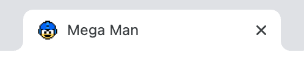
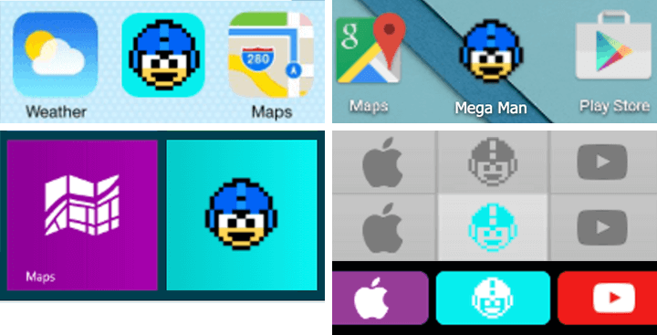

Pour cet exercice, vous devrez créer un fichier HTML affichant dans l’onglet de votre navigateur un favicon de Mega Man.
Aperçu du résultat 👇

Matériel
Couleurs 🎨
#02efee
Médias
Mega Man
Requis
Créez un dossier de projet à l'intérieur duquel un fichier nommé index.html sera présent ainsi qu'un dossier img 📁.
Faites en sorte que le titre du fichier index.html soit: "Mega Man".
À l'aide du site RealFaviconGenerator.net, créez toutes les déclinaisons de favicons nécessaires à partir de l'image source de Mega Man fournie. Assurez-vous aussi que dès qu'une couleur est demandée que le bleu flash en référence soit utilisé et que l'app soit connue sous le nom de "Mega Man".
Voir la référence 👇

Toutes les images générées doivent aller dans le dossier "img" que vous avez créé. Ajustez donc vos chemins de fichiers en conséquence.
Notes de cours 📚